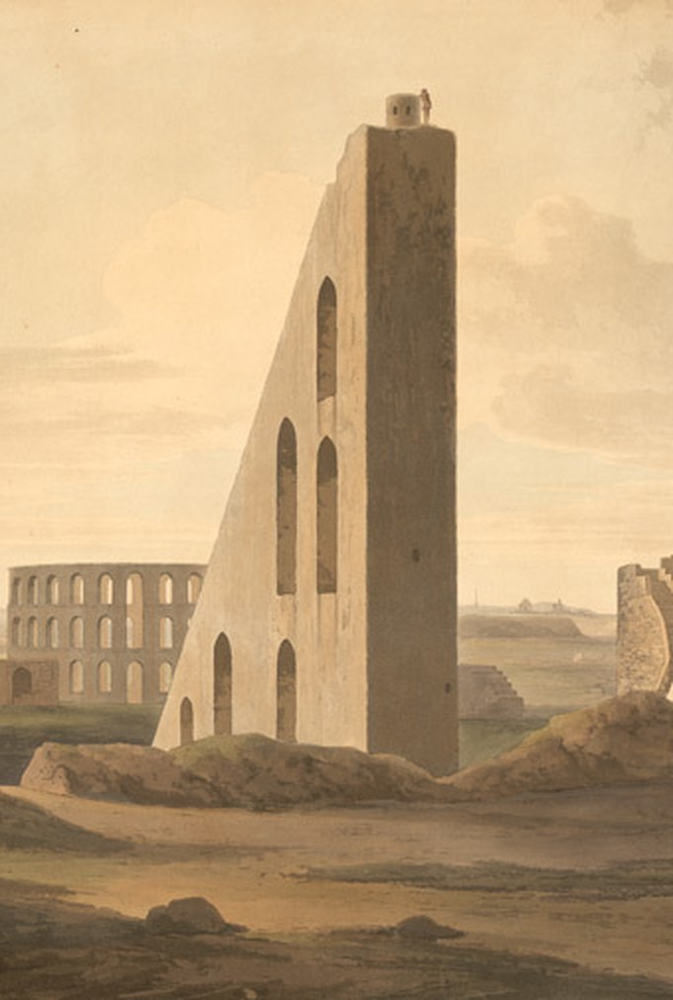

IV
Instruments
Things built to make something legible. These are what I use to keep my own sense of scale honest.

Samrat Yantra, Jantar Mantar, Delhi
Thomas & William Daniell
Things built to make something legible. These are what I use to keep my own sense of scale honest.

Samrat Yantra, Jantar Mantar, Delhi
Thomas & William Daniell